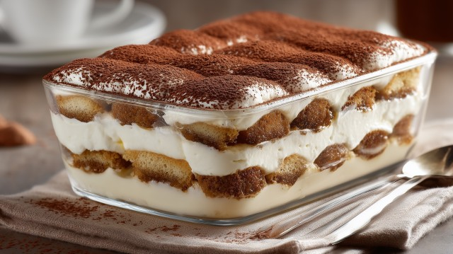

Homepage
Tiramisù

Description
Tiramisù is an iconic italian dessert, known all over the world. Its origins go back to the XX century, in
nord-eastern Italy. Its preparation is very easy and fast to do: the only thing required will be some electric
hand mixer, to more easily whip the cream, or some very good amount of patience and hand power manually!
This dessert combines some tipical italian biscuits, savoiardi, dipped into coffee, with a delicious
cream made out of eggs and mascarpone cheese.
Ingredients (for a 35x25 bake pan)
- 400 g of Savoiardi long biscuits (should be around 40 biscuits)
- 5 fresh eggs (if you don't want raw eggs use pastorized yolks and whites, around 300 g)
- 750 g of mascarpone cheese
- 100 g of white sugar
- 200 ml of cold coffee
- A little bit of cacao powder for the topping
Steps
Cream
- Put the egg yolks into a big bowl with half of the sugar and start whipping them, until they will become
brighter and with more volume.
- Add the mascarpone little by little, always mixing it, until a thick cream will be formed.
- Clean very carefully the hand mixer: this will allow to whip the whites easilly.
- Put the whites into another bowl and whip them until stiff peaks form, adding the rest of the sugar meanwhile.
- Tip for whipping the whites: add a couple of drops of lemon, it will help a lot!
- Add the whipped whites to the cream of mascarpone and yolks: use down-to-up, soft movements, so to not
completely destroy all the work done with the whites!
Building the Tiramisù
- Put a thin layer of cream into the baking pan.
- Dip one biscuit at the time for very little (1 second should be enough) and build a first layer with them.
- Add half of the cream on top of the first layer.
- Dip again the biscuits and build the second layer.
- Add the remaining of the cream on the top, covering all the biscuits.
- Cover the tiramisù and put it to rest into the fridge for at least two hours.
- Before serving sprinkle some cocoa powder on the top and enjoy it!
"Classic tiramisù in a glass dish with cocoa powder"
by Marco Verch is licensed under
CC-BY 2.0